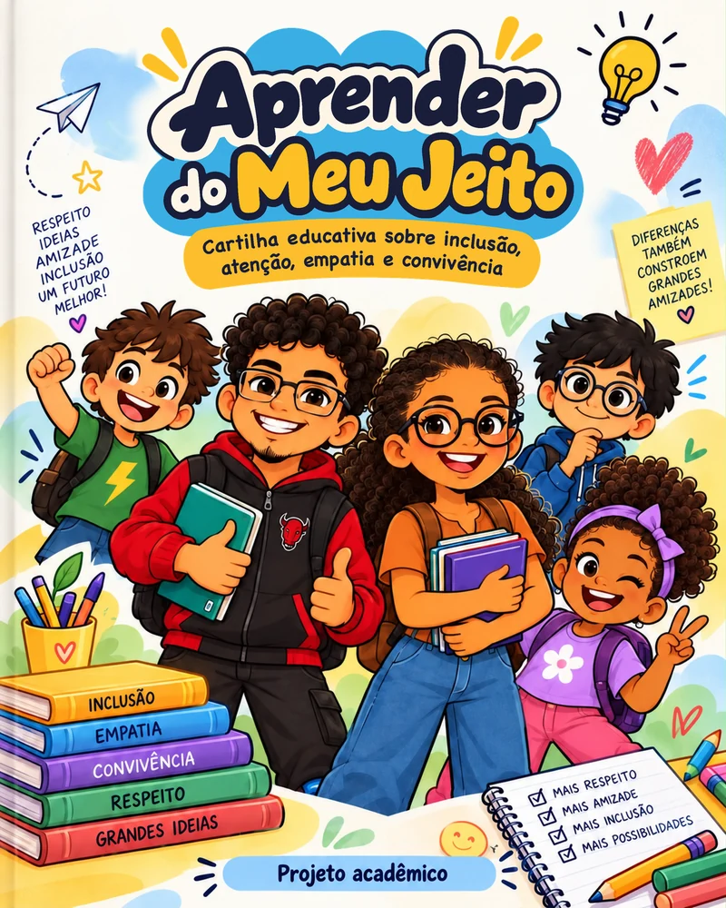

Aprender do Meu Jeito
Cartilha educativa sobre inclusão, atenção, empatia e convivência.
Esta história em quadrinhos nasceu dos depoimentos reais de Lucas e Roberta sobre atenção, aprendizagem e convivência na escola.


Cartilha educativa sobre inclusão, atenção, empatia e convivência.
Esta história em quadrinhos nasceu dos depoimentos reais de Lucas e Roberta sobre atenção, aprendizagem e convivência na escola.
